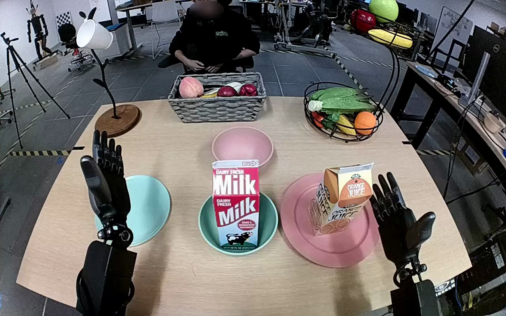

NVIDIA GR1 · 68
Video 68

Visual review action_review.json
{
"prompt_protocol": "humanoid_action_v1",
"prompt_provenance": "visually_authored_from_video_and_initial_frame",
"reviewed_contact_sheets": [
"sheet_001.jpg"
],
"inspected_frame_stride": 2,
"inspected_sampled_frame_count": 60,
"initial_scene": "Robot-facing-forward camera view over a table, with paired robot arms entering from the near lower edge. The orange juice carton stands on the pink plate at the robot right. The empty destination pink bowl is farther forward, behind the milk carton in a turquoise bowl.",
"observed_sequence": [
{
"source_frame_interval": [
0,
18
],
"action": "Both hands are open; orange juice carton remains upright on the pink plate.",
"confidence": "high"
},
{
"source_frame_interval": [
19,
34
],
"action": "Right arm reaches inward toward the orange juice carton; thumb and fingers straddle its sides. Left hand stays clear.",
"confidence": "high"
},
{
"source_frame_interval": [
35,
50
],
"action": "Right thumb and opposing fingers close around the upper-middle carton body while it remains over the plate.",
"confidence": "high"
},
{
"source_frame_interval": [
51,
78
],
"action": "Right hand lifts the carton clear of the plate and carries it upward and inward toward the rear pink bowl, retaining its generally upright orientation.",
"confidence": "high"
},
{
"source_frame_interval": [
79,
113
],
"action": "Right arm lowers the held carton into the pink bowl behind the milk carton, then steadies it upright. The bowl rim and milk carton partly obscure its base.",
"confidence": "high"
},
{
"source_frame_interval": [
114,
119
],
"action": "Right thumb moves off the carton and the fingers open; carton remains upright in the pink bowl while the open hand stays beside it.",
"confidence": "high"
}
],
"arm_hand_roles": {
"right": "Sole manipulating hand: wraps thumb and fingers around the orange juice carton, lifts, transports, lowers into the destination bowl, and opens to release.",
"left": "Open nonparticipating hand remains clear at the near-left table edge, with modest lowering during right-arm transport; does not grasp, support, or transfer the carton.",
"coordination": "Single-hand manipulation; no hand-to-hand transfer or person interaction."
},
"anatomical_side_evidence": {
"description": "The view looks forward from the robot position, with both forearms and proximal arm portions extending from the near lower edge toward the table. The right-side arm remains attached to the lower-right body-side region while crossing inward; paired hand chirality and outward thumb placement in the initial open-hand pose support robot-relative right for the active hand. This is an egocentric convention rather than a frontal-camera left/right reversal.",
"confidence": "high",
"limitation": "Full torso and shoulders are outside the image."
},
"terminal_state": "Orange juice carton stands upright in the rear pink bowl. Right hand is open immediately beside it after releasing its grasp; left hand remains open and clear. Pink source plate is empty.",
"uncertainties": [
"The exact instant when the carton base contacts the bowl bottom is occluded by the bowl rim and foreground milk carton; upright placement and hand opening are visible."
],
"annotation_discrepancies": [],
"evidence_frame_indices": [
0,
30,
56,
78,
104,
110,
116,
118,
119
],
"selected_execution_status": "success",
"inspection_coverage": {
"full_sequence": "Viewed sheet_001.jpg containing every second decoded frame from 0 through 118 (60 sampled frames).",
"native_resolution": "Viewed original source first-frame PNG and native frames 30, 56, 78, 104, 110, 116, 118, 119 at 1280x800; grasp, lift, transport, placement/release, and final state inspected."
},
"video_id": "68",
"dataset": "NVIDIA_GR1_100",
"dedicated_review_agent": "review_gr1_68",
"review_source_video": "NVIDIA_GR1_100/68/original/original.mp4",
"source_frame_count": 120,
"source_fps": 20.0,
"native_detail_frames": [
30,
56,
78,
104,
110,
116,
118,
119
],
"world_model_prompt": "The robot closes its right thumb and fingers around the orange juice carton and lifts it off the pink plate. It carries the carton over the pink bowl behind the milk carton, lowers it upright into the bowl, and opens its right hand, leaving the carton standing in the bowl. Keep the camera fixed; preserve robot geometry, physically valid joint motion, and normal gripper opening and closing.",
"original_task_instruction": "Use the right hand to pick up orange juice carton from center of pink plate to center of pink bowl.",
"selected_segment": {
"start_frame": 0,
"end_frame_exclusive": 120,
"reason": "Complete original single-task reference; no cropping or trimming requested."
},
"source_video_sha256": "d2b447b734dae1bbc86fd3c7766ae3c4662914b0df02e694344fc484cbf7090a",
"review_completed_at": "2026-10-13T18:25:54.419912+00:00"
}